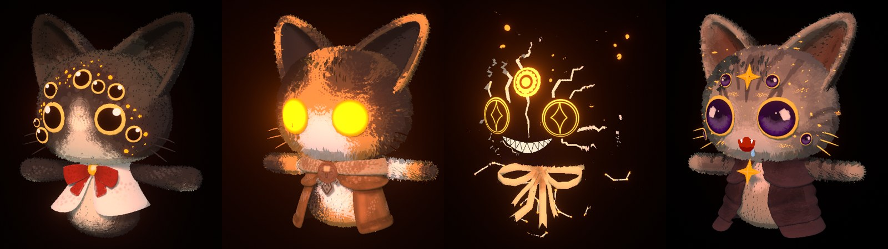

Le rendu des chats, comme dans Blender (tour 1)
Référence : les matériaux de l'artiste dans Corrupted_Cats.blend, rendus avec sa caméra et sa
lumière (le Drive n'a aucun rendu, je les ai faits) :

Aujourd'hui : les chats utilisent le rendu réaliste d'Unity : dégradé doux, reflets, ombres qui tombent au noir,
et presque aucune partie lumineuse. Chez l'artiste, chaque matériau mélange moitié lumière classique et moitié aplat
à deux tons (la texture, ou la texture à 50 % côté ombre, coupure nette), et cet aplat brille de lui-même.
La scène : vue assise, de jour. Les quatre pelages de l'artiste, chacun sous la lumière de son chat ; en
dessous (section 1), les mêmes chats hors de toute lumière, comme un chat que rien n'éclaire la nuit.
Sans question : nouveau shader des chats avec l'aplat à deux tons, sans reflets, avec les parties lumineuses
du fichier (points orange du noir et blanc, yeux ardents et galactiques, fissures, paillettes) ; textures du corps
noir et blanc et des yeux ronds remises à la version du Drive ; le fondu des emotes et les contours ne changent pas ;
le chat du menu suit le même choix.
1. Hors de la lumière, le chat reste-t-il visible ?
X0Actuel
Le rendu d'Unity d'aujourd'hui. En haut sous sa lumière, en bas sans lumière.
AComme Blender (par défaut)
L'aplat brille de lui-même : sans lumière, le chat garde ses couleurs à moitié, on le reconnaît toujours.
BSeulement la lumière du jeu
Mêmes aplats sous la lumière, mais sans lumière il ne reste que ce qui brille (yeux, points, fissures).
CEntre les deux
Sans lumière, le chat reste visible mais plus sombre que A.